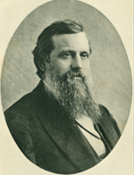

|

|

|
|
|
John Eaton, Jr. is best known for his work as Superintendent of Freedmen in the
Mississippi Valley during the Civil War, and later as Commissioner of the Bureau
of Education. Born on December 5, 1829 in rural New Hampshire, his early life
revolved around chores on the family farm, and the occasional schooling common
in the antebellum era. A job teaching in a nearby school at the age of sixteen
allowed him to attend Thetford Academy in Vermont, and later to enroll at
Dartmouth College. Graduating from Dartmouth in 1854, Eaton became principal of
the Ward School in Cleveland, Ohio. In 1856, at the age of twenty-seven, Eaton
accepted the position of Superintendent of the city schools in Toledo, Ohio.
Resigning the school superintedency in 1859 he entered a seminary and was
ordained in the spring of 1861.
Eaton joined the Union cause in August of 1861 as chaplain of the 27th Ohio
Volunteer Infantry. In November 1862 General Ulysses S. Grant appointed
Chaplain Eaton Superintendent of Contrabands for the Department of the
Tennessee, a post he held for the remainder of the War. Eaton displayed
extraordinary organizational ability in providing for the relief of thousands of
liberated slaves, and following emancipation, coordinating the relief efforts of
the Freedmen's Aid Societies and organizing schools for the Freed people. Eaton
assumed command of the 9th Louisiana Volunteers African Descent (later
redesignated 63rd United States Colored Troops) in October 1863. Colonel
Eaton's unstinting work on behalf of freed men and women in the Mississippi
Valley earned him a brevet to Brigadier General of Volunteers in March 1865.
John Eaton married Alice Shirley, the daughter of a Vicksburg Unionist in
September 1864. Following the War Eaton served as Assistant Commissioner of the
Freedmen's Bureau and as State Superintendent of Schools for Tennessee.
When in 1867 Congress created the Department of Education, Dr. Henry Barnard
was named its first Commissioner, but Congress never appropriated the funds to
print the Department's reports. Dr. Barnard spent much of his personal fortune
printing the reports privately, but despite his best efforts, by 1879, the
Department of Education had not only been reduced to a Bureau in the Department
of the Interior, but its very existence was threatened. In 1870 President Grant
appointed Eaton commissioner of the Bureau, and Eaton set about a revitalization
campaign. He established the annual collection of vital statistics on education
as the Bureau's chief function and secured funds from Congress for printing
annual reports. Under Eaton's leadership the Bureau of Education supported
efforts to expand education for blacks in the South, organized a training school
for nurses, and promoted agricultural, commercial, and industrial training. In
1886 Eaton also took a special interest in the educational opportunities
available to Native Americans.
Eaton resigned as Commissioner due to failing health, although, at the
request of the administration, he remained for nearly a year after his official
resignation. He later served as president of Marietta College in Ohio
(1886-1891), and Sheldon Jackson College in Salt Lake City (1895-1899). In
January 1899 the military appointed General Eaton Superintendent of Schools for
Puerto Rico. During his brief tenure he established the first free school
system for all children on the island, and worked to ensure adequate educational
opportunities for girls, particularly in rural areas. Eaton resigned the
following May due to ill health, and died February 9, 1906, at the age of 76.
Source: Joan Waugh, ed., Facts on File Encyclopedia of American
History: Civil War and Reconstruction, 1856 to 1869 (New York: Facts on
File, 2003), 104.
|